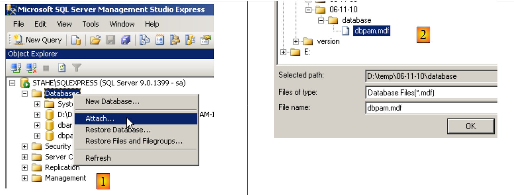
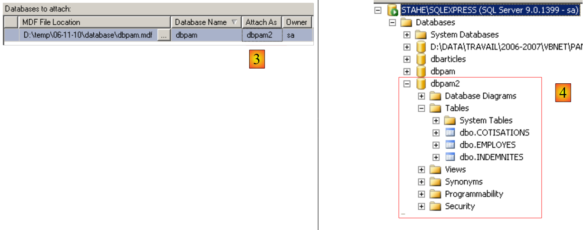
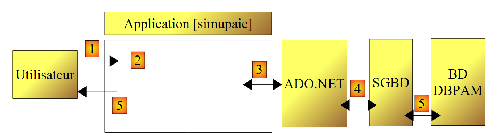

3. El caso práctico
Queremos desarrollar una aplicación .NET que permita al usuario simular los cálculos de nóminas para los cuidadores infantiles de la asociación «Maison de la petite enfance» en un municipio. Nos centraremos tanto en la organización del código .NET de la aplicación como en el código en sí.
3.1. La base de datos « »
Los datos estáticos necesarios para generar la nómina se almacenan en una base de datos SQL Server Express denominada dbpam (pam = Paie Assistante Maternelle). Esta base de datos tiene un administrador llamado sa con la contraseña msde.
 |
La base de datos contiene tres tablas, EMPLOYEES, CONTRIBUTIONS y ALLOWANCES, con la siguiente estructura:
Table EMPLOYES : rassemble des informations sur les différentes assistantes maternelles
Estructura:
 |
|
Su contenido podría ser el siguiente:

Table COTISATIONS : rassemble les taux des cotisations sociales prélevées sur le salaire
Estructura:
 |
Su contenido podría ser el siguiente:
Las tasas de cotización a la Seguridad Social son independientes del empleado. La tabla anterior solo tiene una fila.
Table INDEMNITES : rassemble les différentes indemnités dépendant de l'indice de l'employé
 |
|
Su contenido podría ser el siguiente:

Tenga en cuenta que las prestaciones pueden variar de un proveedor de servicios de guardería a otro. Están vinculadas a un proveedor de servicios de guardería específico a través de la categoría salarial de dicho proveedor. Así, la Sra. Marie Jouveinal, que tiene una categoría salarial de 2 (tabla EMPLOYEES), tiene un salario por hora de 2,1 euros (tabla INDEMNITES).
Las relaciones entre las tres tablas son las siguientes:
 |
Existe una relación de clave externa entre la columna EMPLOYEES(INDEX) y la columna ALLOWANCES(INDEX).
La base de datos [dbpam] creada de esta manera genera dos archivos en la carpeta de SQL Server Express:
 |
Los archivos [dbpam.mdf, dbpam_log.ldf] se pueden transferir a otro equipo y volver a conectar al sistema de gestión de bases de datos SQL Server Express de ese equipo. A continuación se explica cómo hacerlo:
- Los archivos de la base de datos [dbpam] se copian a una carpeta
 |
- Inicie SQL Server Express
- Utilizando el cliente SQL Server Management Studio Express, adjunte el archivo [dbpam.mdf] a la base de datos:
 |
 |
- Haga clic con el botón derecho en [Bases de datos] / Conectar
- Seleccione el archivo [dbpam.mdf] mediante el botón [Añadir] (no se muestra)
- El archivo adjunto creará una base de datos que no debe existir ya. Aquí, en el campo [Adjuntar como], hemos nombrado la nueva base de datos [dbpam2].
- Puede ver la nueva base de datos y sus tablas
Esta técnica para conectar una base de datos resulta útil para transferir una base de datos de un ordenador a otro, y la utilizaremos ocasionalmente aquí.
3.2. Método de cálculo del salario de una cuidadora infantil
A continuación, presentaremos el método para calcular el salario mensual de una cuidadora infantil. Como ejemplo, utilizaremos el salario de la Sra. Marie Jouveinal, que trabajó 150 horas repartidas en 20 días durante el periodo de pago.
Se tienen en cuenta los siguientes factores: | | |
El salario base del cuidador de niños se calcula utilizando la siguiente fórmula: | ||
De este salario base deben deducirse una serie de cotizaciones a la seguridad social: | | |
Total de cotizaciones a la Seguridad Social: | | |
Además, la cuidadora tiene derecho a una asignación para gastos de manutención y a una asignación para comidas por cada día trabajado. Por lo tanto, recibe las siguientes asignaciones: | ||
Al final, el salario neto que se pagará a la cuidadora es el siguiente: |
3.3. Recordatorios de ADO.NET
La aplicación de cálculo de nóminas requiere información de la base de datos [dbpam]. Su arquitectura será la siguiente:
 |
- En [1], el usuario realiza una solicitud
- En [2], la aplicación de nóminas la procesa.
- Es posible que entonces necesite datos de la base de datos. A continuación, envía una consulta al proveedor ADO.NET del SGBD que se está utilizando [4].
- El proveedor accede a la base de datos [5] y devuelve los resultados al proveedor ADO.NET, que a su vez los transmite a la aplicación
- La aplicación procesa estos resultados y genera una respuesta [5] para el usuario
A continuación, repasaremos las principales interfaces que un proveedor ADO.NET ofrece a sus clientes [3].
En modo conectado, la aplicación:
- abre una conexión con el origen de datos
- trabaja con el origen de datos en modo lectura/escritura
- cierra la conexión
En estas operaciones intervienen principalmente tres interfaces de ADO.NET:
- IDbConnection, que encapsula las propiedades y métodos de la conexión.
- IDbCommand, que encapsula las propiedades y métodos del comando SQL ejecutado.
- IDataReader, que encapsula las propiedades y métodos del resultado de una instrucción SQL SELECT.
La interfaz IDbConnection
se utiliza para gestionar la conexión con la base de datos. Entre los métodos (M) y propiedades (P) de esta interfaz se encuentran los siguientes:
Nombre | Tipo | Rol |
P | Cadena de conexión a la base de datos. Especifica todos los parámetros necesarios para establecer una conexión con una base de datos concreta. | |
M | Abre la conexión a la base de datos definida por ConnectionString | |
M | Cierra la conexión | |
M | Inicia una transacción. | |
P | Estado de la conexión: ConnectionState.Closed, ConnectionState.Open, ConnectionState.Connecting, ConnectionState.Executing, ConnectionState.Fetching, ConnectionState.Broken |
Si Connection es una clase que implementa la interfaz IDbConnection, la conexión se puede abrir de la siguiente manera:
La interfaz IDbCommand
se utiliza para ejecutar una instrucción SQL o un procedimiento almacenado. Entre los métodos M y las propiedades P de esta interfaz se encuentran los siguientes:
Nombre | Tipo | Función |
P | especifica qué se va a ejecutar - toma sus valores de una enumeración: - CommandType.Text: ejecuta la instrucción SQL definida en la propiedad CommandText. Este es el valor predeterminado. - CommandType.StoredProcedure: ejecuta un procedimiento almacenado en la base de datos | |
P | - el texto de la instrucción SQL que se ejecutará si CommandType = CommandType.Text - el nombre del procedimiento almacenado que se ejecutará si CommandType = CommandType.StoredProcedure | |
P | la conexión IDbConnection que se utilizará para ejecutar la instrucción SQL | |
P | la transacción IDbTransaction en la que se ejecutará la instrucción SQL | |
P | La lista de parámetros para una instrucción SQL parametrizada. La instrucción `update articles set price=price*1.1 where id=@id` tiene el parámetro `@id`. | |
M | Para ejecutar una instrucción SQL SELECT. Devuelve un objeto IDataReader que representa el resultado de la instrucción SELECT. | |
M | Para ejecutar una instrucción SQL Update, Insert o Delete. Se devuelve el número de filas afectadas por la operación (actualizadas, insertadas o eliminadas). | |
M | para ejecutar una instrucción SQL Select que devuelva un único resultado, como por ejemplo: select count(*) from articles. | |
M | para crear los parámetros IDbParameter de una instrucción SQL parametrizada. | |
M | permite optimizar la ejecución de una consulta parametrizada cuando se ejecuta varias veces con diferentes parámetros. |
Si Command es una clase que implementa la interfaz IDbCommand, la ejecución de una instrucción SQL sin una transacción adoptará la siguiente forma:
La interfaz IDataReader
Se utiliza para encapsular los resultados de una instrucción SQL Select. Un objeto IDataReader representa una tabla con filas y columnas, que se procesan secuencialmente: primero la primera fila, luego la segunda, y así sucesivamente. Entre los métodos (M) y propiedades (P) de esta interfaz se encuentran los siguientes:
Nombre | Tipo | Función |
P | El número de columnas de la tabla IDataReader | |
M | GetName(i) devuelve el nombre de la columna i de la tabla IDataReader. | |
P | Item[i] representa la columna número i de la fila actual en la tabla IDataReader. | |
M | Pasa a la siguiente fila de la tabla IDataReader. Devuelve True si la fila se ha leído correctamente; False en caso contrario. | |
M | Cierra la tabla IDataReader. | |
M | GetBoolean(i): devuelve el valor booleano de la columna i en la fila actual de la tabla IDataReader. Otros métodos similares son: GetDateTime, GetDecimal, GetDouble, GetFloat, GetInt16, GetInt32, GetInt64, GetString. | |
M | Getvalue(i): devuelve el valor de la columna i en la fila actual de la tabla IDataReader como un tipo de objeto. | |
M | IsDBNull(i) devuelve True si la columna i de la fila actual de la tabla IDataReader no tiene ningún valor, lo que se representa mediante el valor SQL NULL. |
El uso de un objeto IDataReader suele ser similar al siguiente: